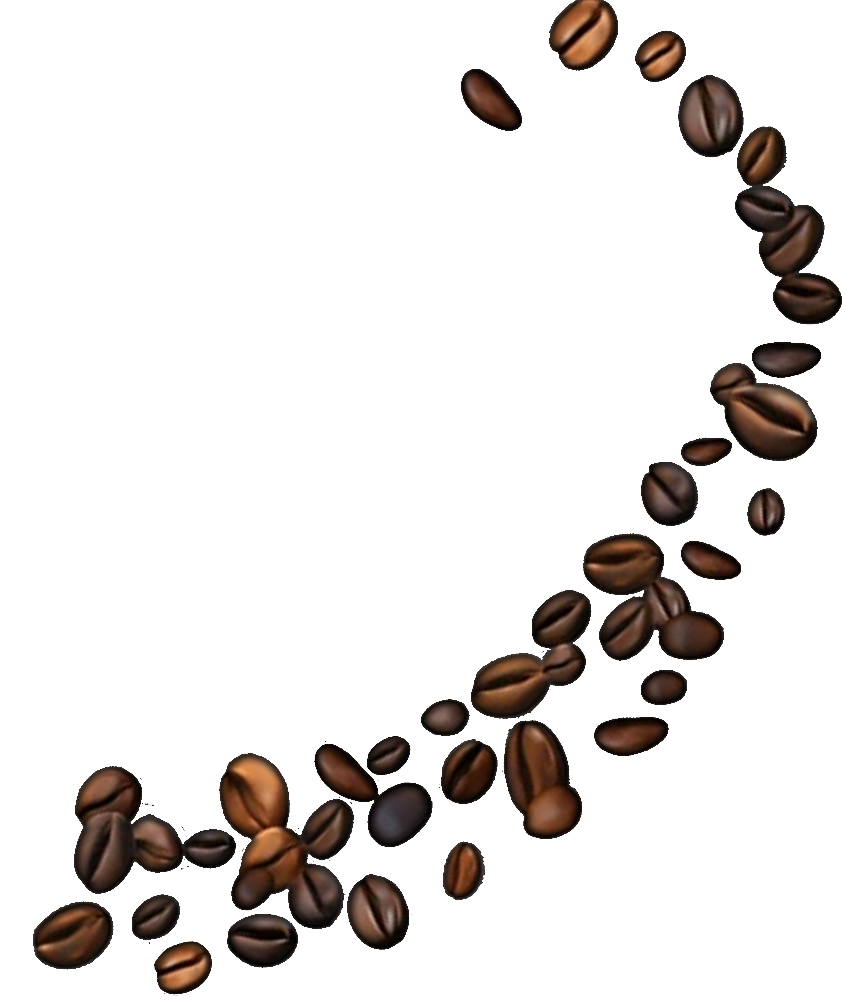
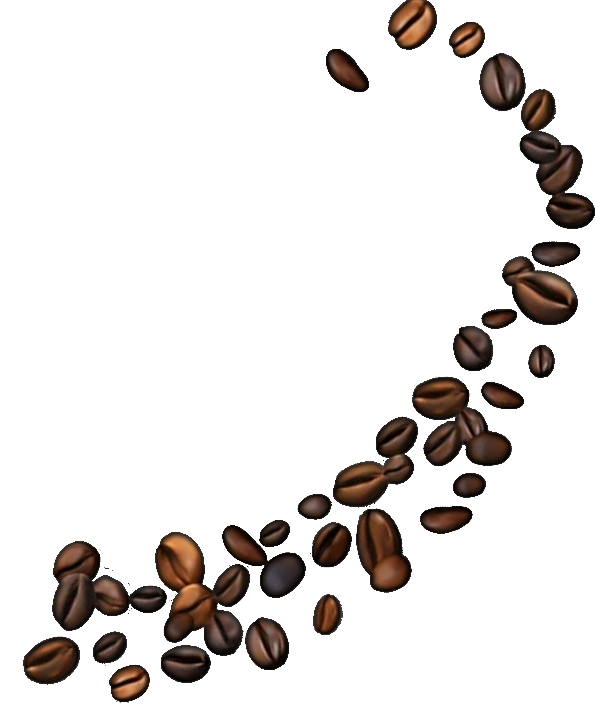

Jabon Exfoliante
Descubre el poder natural del café en tu piel. Nuestro jabón artesanal con borra de café exfolia suavemente, revitaliza y deja tu piel fresca y luminosa.
En Kinti Coffee creemos que cada taza es un viaje. Desde los valles andinos del Perú hasta tu mesa, llevamos lo mejor de la cosecha artesanal, cultivada con pasión y respeto por la tierra.
 

Notas florales y frutales que despiertan los sentidos.

Balance perfecto entre cuerpo y acidez.
Fuerza, carácter y sabor profundo para los paladares más exigentes.
Disfruta de tu café a cada momento y en cada lugar.
Rompa la parte superior del empaque y del drip.


Agite el drip ligeramente para nivelar el café y coloque los soportes sobre la taza.
Lentamente, vierta agua caliente a (92°C - 96°C, 150ml - 180 ml).


Retire el drip de la taza y disfrute su café.
Jabon Exfoliante
Descubre el poder natural del café en tu piel. Nuestro jabón artesanal con borra de café exfolia suavemente, revitaliza y deja tu piel fresca y luminosa.
Pulsera Kafira
Es una pulsera artesanal y sostenible que convierte granos de café ya utilizados en piezas de joyería únicas. Cada pulsera es el resultado de un proceso de revalorización: del café a la bebida, y de la bebida a una joya.

Aromatizador Solido
Descubre el poder natural del café en tu piel. Nuestro jabón artesanal con borra de café exfolia suavemente, revitaliza y deja tu piel fresca y luminosa.
Vela Aromatica
El café vive dos veces: una en tu taza, otra en el aire, prueba nuestras velas hechas a base de borra de café, las cuales brindan un aroma a vainilla y capuccino.
Rompa la parte superior del empaque y del drip.
.jpeg)
Agite el drip ligeramente para nivelar el café y coloque los soportes sobre la taza.
Rompa la parte superior del empaque y del drip.
Agite el drip ligeramente para nivelar el café y coloque los soportes sobre la taza.
Rompa la parte superior del empaque y del drip.
.jpeg)
Agite el drip ligeramente para nivelar el café y coloque los soportes sobre la taza.
Rompa la parte superior del empaque y del drip.
Agite el drip ligeramente para nivelar el café y coloque los soportes sobre la taza.
Rompa la parte superior del empaque y del drip.
.jpeg)
Agite el drip ligeramente para nivelar el café y coloque los soportes sobre la taza.
Rompa la parte superior del empaque y del drip.
Agite el drip ligeramente para nivelar el café y coloque los soportes sobre la taza.
Macerado de Cafe
Realizado a base de pisco peruano y nuestros granos de café Aromático, el cual le da elsabor unico e inigualable.
Consultar preciosKinti Coffee nace con el propósito de llevar el café peruano al mundo. Trabajamos de la mano con comunidades cafetaleras locales, asegurando prácticas sostenibles y comercio justo. Nuestra misión es simple: que cada taza te transporte a las montañas del Perú, donde el café se cultiva con amor y se transforma en una experiencia única.
Misión: Dar vida al café en cada forma; aroma, sabor y Sostenibilidad
• Visión: transformar el café peruano en experiencias conscientes y circulares.
"Café que se disfruta, residuos que inspiran"
Únete a nuestra revolución del café. Cada Taza que disfrutas, cada producto que eliges, es un paso hacia un futuro más verde.
¡Juntos hacemos la diferencia!